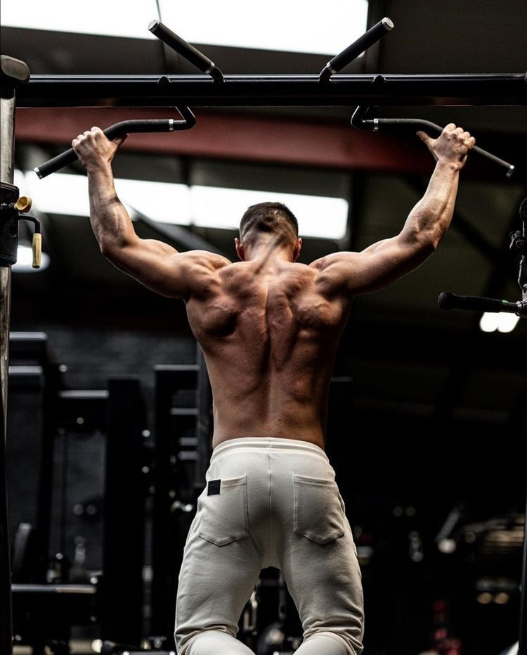

Workout Routines for Men: The Ultimate Guide
Whether you’re looking to shed pounds or add bulk, here’s how to tailor
your workout to help you reach your fitness goals.
When it comes to achieving your best physique,
a proper strength training program is essential.
Whether you’re looking to transform your body or just kick your training up a notch,
it’s important to add training volume (in the form of reps, sets, and weight) to stimulate new muscle growth as you progress.
In general, most beginners have been lifting for less than a year, intermediates for at
least 1 year, and advanced trainees for at least 2 years. Keep in mind that
you should not attempt advanced workouts unless you have appropriate strength training experience.
This article reviews several high quality exercise regimens for men of all experience
levels to maximize muscle and strength gains while ensuring adequate recovery.
Beginner’s workout routine for men

Starting out in the gym can seem intimidating, but with proper guidance,
the process becomes more approachable — and even invigorating.
As a beginner, you can progress very quickly because almost
any exercise promotes muscle and strength gains. Still,
it’s important to avoid overexertion, which can lead to injuries or decreased performance.
This workout routine has you in the gym 3 days per week
(such as Monday, Wednesday, and Friday), with full-body sessions completed each day.
This allows you to get used to new movements, focus on proper form, and take time to recover.
You can add reps and sets as needed as you progress.
The beginner phase should last as long as you continue to improve.
Some people may plateau at around 6 months, whereas others may continue to see results for more than a year.
Equipment required: fully equipped gym
Rest periods: 90–180 seconds for main movements, 60–90 seconds for accessories
Intensity: Select a weight that allows you to complete the prescribed reps while leaving about 2 solid reps in the tank.
Day 1: Full body
Legs: barbell back squats — 3 sets of 5 reps
Chest: flat barbell bench press — 3 set of 5 reps
Back: seated cable rows — 3 sets of 6–8 reps
Shoulders: seated dumbbell shoulder press — 3 sets of 6–8 reps
Triceps: cable rope triceps pushdowns — 3 sets of 8–10 reps
Shoulders: lateral raises — 3 sets of 10–12 reps
Calves: seated calf raises — 3 sets of 10–12 reps
Abs: planks — 3 sets of 30-second holds
Day 2: Full body
Back/hamstrings: barbell or trap bar deadlifts — 3 sets of 5 reps
Back: pullups or lat pulldowns — 3 sets of 6–8 reps
Chest: barbell or dumbbell incline press — 3 sets of 6–8 reps
Shoulders: machine shoulder press — 3 sets of 6–8 reps
Biceps: barbell or dumbbell biceps curls — 3 sets of 8–10 reps
Shoulders: reverse machine fly — 3 sets of 10–12 reps
Calves: standing calf raises — 3 sets of 10–12 reps
Day 3: Full body
Legs: leg press — 3 sets of 5 reps
Back: T-bar rows — 3 sets of 6–8 reps
Chest: machine or dumbbell chest fly — 3 sets of 6–8 reps
Shoulders: one-arm dumbbell shoulder press — 3 sets of 6–8 reps
Triceps: dumbbell or machine triceps extensions — 3 sets of 8–10 reps
Shoulders: cable or dumbbell front raises — 3 sets of 10–12 reps
calves: seated calf raises — 3 sets of 10–12 reps
Abs: decline crunches — 3 sets of 10–12 reps
Intermediate workout routine

After working hard in the gym for several months, it’s time to
step your training up a notch to keep your gains coming.
At this point, you should have good exercise technique and be
able to handle more weight on the bar.
This 4-day-per-week intermediate program increases reps and sets
to stimulate new muscle growth. When they become too easy, you
can gradually add more weight or more reps/sets.
If you do it correctly, you can follow this routine for several
years until you reach an advanced level. It may be helpful to switch
up your exercises on occasion to keep yourself engaged and prevent burnout.
Remember that soreness is not always an indicator of muscle growth.
Now that you have some training experience, you may not get sore after every workout.
Equipment required: fully equipped gym
Rest intervals: 90–180 seconds for main movements, 60–90 seconds for accessories
Intensity: Select a weight that allows you to complete the prescribed reps while
leaving about 2 solid reps in the tank. To increase intensity, go to your limit on the last set.
Day 1: Upper body
Chest: flat barbell bench press — 4 sets of 6–8 reps
Back: bent-over barbell rows — 3 sets of 6–8 reps
Shoulders: seated dumbbell press — 3 sets of 8–10 reps
Chest/triceps: dips — 3 sets of 8–10 reps
Back: pullups or lat pulldowns — 3 sets of 8–10 reps
Triceps/chest: lying dumbbell triceps extensions — 3 sets of 10–12 reps
Biceps: incline dumbbell curls — 3 sets of 10–12 reps
Day 2: Lower body
Legs: barbell back squats — 4 sets of 6–8 reps
Legs: leg press — 3 sets of 8–10 reps
Quadriceps: seated leg extensions — 3 sets of 10-12 reps
Quadriceps: dumbbell or barbell walking lunges — 3 sets of 10–12 reps
Calves: calf press on leg press — 4 sets of 12–15 reps
Abs: decline crunches — 4 sets of 12–15 reps
Day 3: Upper body
Shoulders: overhead press — 4 sets of 6–8 reps
Chest: incline dumbbell bench press — 3 sets of 8–10 reps
Back: one-arm cable rows — 3 sets of 10–12 reps
Shoulders: cable lateral raises — 3 sets of 10–12 reps
Rear deltoids/traps: face pulls — 3 sets of 10–12 reps
Traps: dumbbell shrugs — 3 sets of 10–12 reps
Triceps: seated overhead triceps extensions — 3 sets of 10–12 reps
Biceps: machine preacher curls — 3 sets of 12–15 reps
Day 4: Lower body
Back/hamstrings: barbell deadlift — 4 sets of 6 reps
Glutes: barbell hip thrusts — 3 sets of 8-10 reps
Hamstrings: Romanian dumbbell deadlifts — 3 sets of 10–12 reps
Hamstrings: lying leg curls — 3 sets of 10-12 reps
Calves: seated calf raises — 4 sets of 12–15 reps
Abs: leg raises on Roman chair — 4 sets of 12–15 reps
Advanced workout routine for men

Additional volume (sets and reps) and intensity (weight on the bar) are
essential for advanced gym-goers to keep gaining muscle.
Keep in mind that you should not attempt this routine unless you’ve been
training consistently for 2 or more years.
While the muscle gains won’t come as fast as they did when you were
a beginner, there’s still room for significant progress at this stage.
This grueling workout routine has you in the gym 6 days per week with
1 rest day in between. It follows a pull-push-legs pattern, hitting
each muscle group twice per week, with supersets incorporated for maximum hypertrophy (muscle growth).
Again, you can increase weight on the bar, as well as sets and reps,
from week to week to ensure continued progress while following this program.
Equipment required: fully equipped gym
Rest periods: 90–180 seconds for main movements, 60–90 seconds for accessories
Intensity: Select a weight that allows you to complete the prescribed reps while
leaving about 2 solid reps in the tank. To increase intensity, go to failure on the last set.
Supersets: Complete the initial set of the first movement immediately followed by
the second movement. Repeat until all designated reps and sets are complete.
Pull A
Back/hamstrings: barbell deadlift — 5 sets of 5 reps
Back: pullups or lat pulldowns — 3 sets of 10–12 reps
Back: T-bar rows or seated cable rows — 3 sets of 10–12 reps
Rear deltoids/traps: face pulls — 4 sets of 12–15 reps
Biceps: hammer curls — 4 sets of 10-12 reps supersetted with dumbbell shrugs 4 sets of 10–12 reps
Biceps: standing cable curls — 4 sets of 10–12 reps
Push A
Chest: flat barbell bench press — 5 set of 5 reps
Shoulders: seated dumbbell press — 3 sets of 6–8 reps
Chest: incline dumbbell bench press — 3 sets of 10–12 reps
Triceps/shoulders: triceps pushdowns — 4 sets of 10–12 reps supersetted with lateral raises — 4 sets of 10–12 reps
Chest: cable crossovers — 4 sets of 10–12 reps
Legs A
Legs: barbell back squats — 5 sets of 5 reps
Hamstrings: Romanian dumbbell deadlifts — 3 sets of 6–8 reps
Legs: leg press — 3 sets of 8–10 reps
Hamstrings: lying leg curls — 4 sets of 10–12 reps
Calves: seated calf raises — 4 sets of 12–15 reps
Abs: decline crunches — 4 sets of 12–15 reps
Pull B
Back: bent-over barbell rows — 3 sets of 6–8 reps
Back: pull-ups (weighted if needed) — 3 sets of 8–10 reps
Back: one-arm rows — 3 sets of 8–10 reps
Lower back: hyperextensions — 4 sets of 10–12 reps supersetted with machine preacher curls — 4 sets of 10–12 reps
Traps: barbell shrugs — 4 sets of 10–12 reps
Push B
Shoulders: overhead press — 5 sets of 5 reps
Chest: dumbbell bench press (incline or flat) — 3 sets of 8–10 reps
Chest/triceps: dips (weighted if needed) — 4 sets of 10–12 reps
Shoulders: single-arm cable lateral raises — 4 sets of 10–12 reps
Chest: machine fly — 4 sets of 10–12 reps
Triceps: overhead extensions with rope — 4 sets of 10–12 reps
Legs B
egs: barbell front squats — 5 sets of 5 reps
Hamstrings: glute ham raises — 3 sets of 8–10 reps
Legs: walking dumbbell lunges — 3 sets of 10–12 reps per leg
Quadriceps: seated leg extensions — 4 sets of 10–12 reps supersetted with standing calf raises — 4 sets of 12–15 reps
Abs: hanging leg raises — 4 sets of 12–15 reps